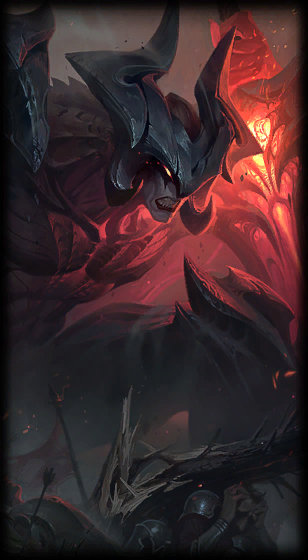
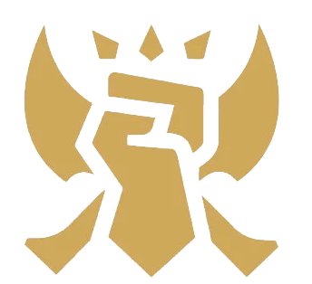
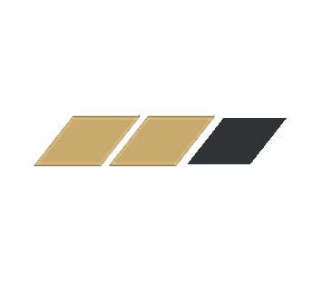

Aatrox
la Espada Darkin
Aatrox y sus hermanos, que alguna vez fueron respetados defensores de Shurima contra el Vacío, se convirtieron en una amenaza aún mayor para Runaterra y los derrotaron con hechicería mortal usada con astucia. Pero, después de siglos de encarcelamiento...
Rol: Luchador | Dificultad: Media

